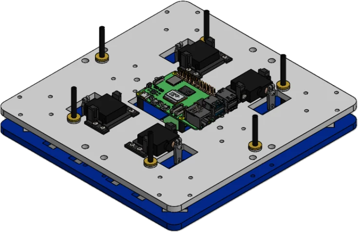
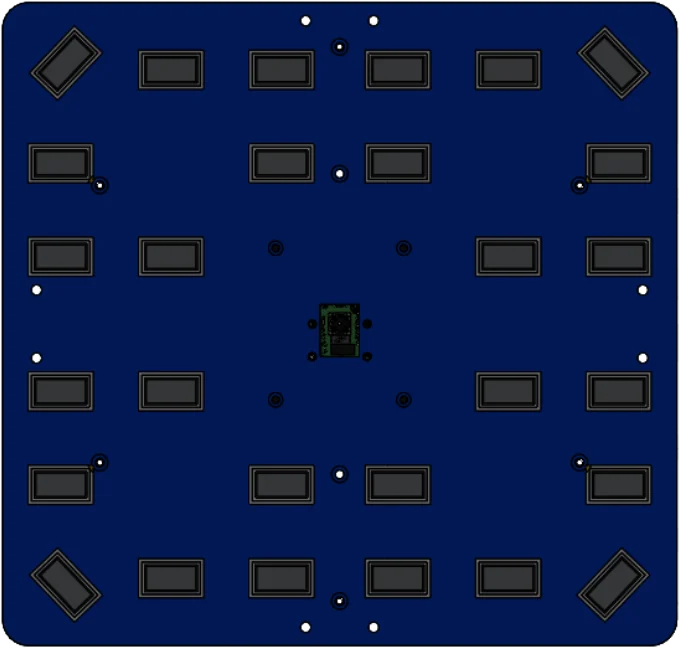
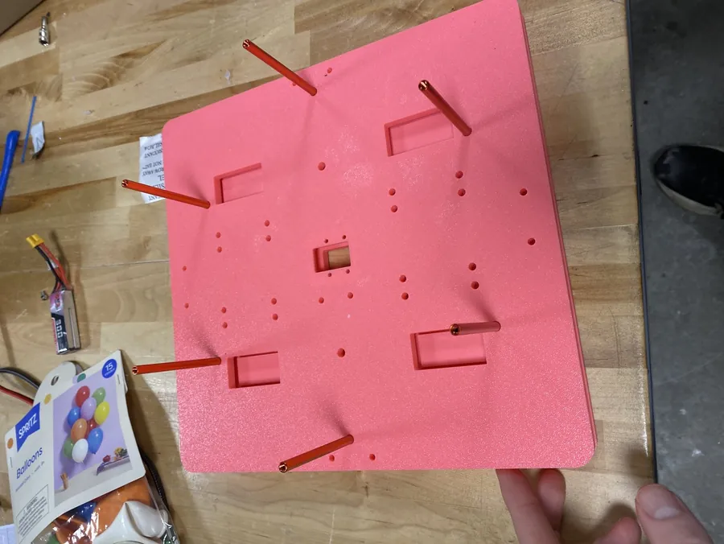
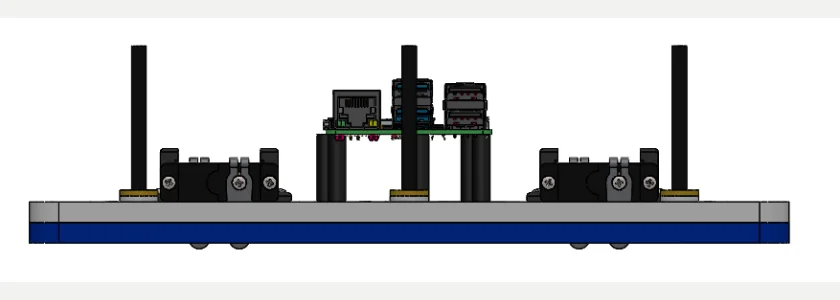
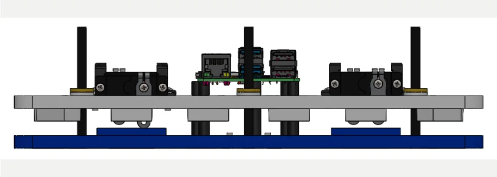
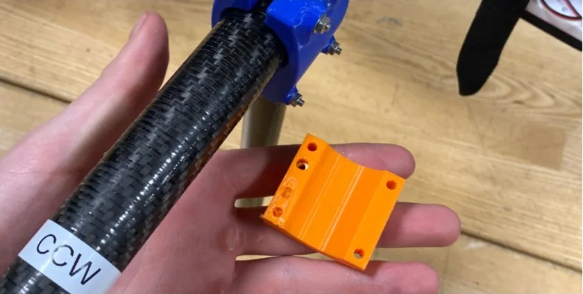
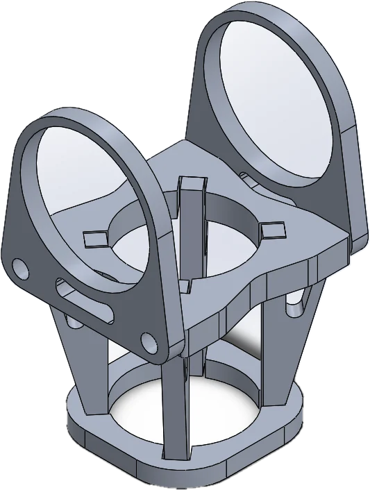
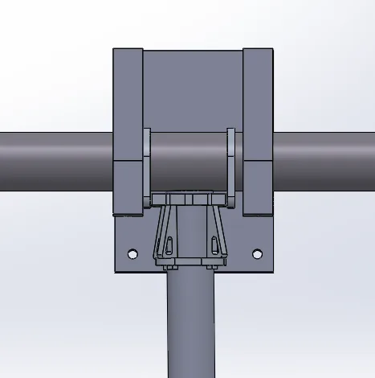

VTOL Payload and Landing Gear
Mechanical work on the team's competition drone, which placed 3rd of 20 at the 2026 championship. I designed the payload pickup and release, and redesigned the landing gear after a printed bracket failed in flight.
- 3rd of 20at the 2026 championship
- 20magnets installed, 7 required
- 0landing gear failures at the championship

Payload pickup and release
Why permanent magnets
The drone lands on a payload, picks it up, flies it and lets it go on command. I looked at what other teams used, including mechanical latches, servo hooks and several magnetic setups, then built and bench tested an electromagnet. It held well, but only while powered, so any brief power loss in flight would drop the payload.
The final design holds with permanent magnets, which need no power, and releases when a servo pulls the plate 15 mm away from them. I also looked at an electropermanent magnet, which does both jobs in one part, but decided the added complexity wasn't worth it.
Sizing the magnet array
At least 7 magnets had to stay engaged wherever the drone sets down on the plate. I set that minimum from the payload weight and the pull force per magnet, then installed 20 and left spare pockets for retuning. A plate between the magnets and the payload spreads the contact so it stays even when the pickup is off angle.
I calculated the holding force and then tested it on the bench, and the two agreed.




Numbers for the electrical team
Bench firmware cycled the release while I checked that the servo still had torque to spare. I measured current with the motion blocked. That is a stall reading for sizing the power system, not a normal release, and a meter misses the short peaks.
Passive holding removes the risk of a drop from power loss. It doesn't protect against the servo failing to release, or an impact hard enough to shear the plate off.




Loads on the payload
Hand calculations with estimated accelerations, not measurements.
Pulling the payload off
The payload is 6 lb, 2.72 kg, so it weighs 26.7 N. In flight the magnets also have to accelerate it, so the force pulling it off the plate is m(g + a).
A multirotor can't push the payload harder than its own thrust allows. The largest upward acceleration it can produce is about (T/W − 1)g, so with a thrust to weight near 2 the payload sees at most about 2g. That puts the worst pull-off load at about 53 N.
Spread over the 7 magnets that are always engaged, each one has to hold about 7.6 N, or about 11.4 N with a factor of safety of 1.5.
Sideways load
Tilting to fly forward doesn't load the plate sideways much. The thrust tilts with the drone, so the payload's apparent weight stays roughly along the drone's own vertical axis. Sideways load comes from quick attitude changes, gusts on the payload and touching down off level. I estimated 0.5g, about 13 N.
Magnets are weak in that direction. Against shear they only hold through friction, and with a friction coefficient around 0.25 a magnet resists about a quarter of its pull. Carrying 13 N by friction alone would take about 53 N of extra clamping force, as much again as the pull-off case. Anything that locates the payload mechanically takes that load off the magnets.
Servo
The release uses Flite Test 42 g ES3005 high torque servos, rated at about 10 kg·cm at 4.8 V and 12 kg·cm at 6 V, or 0.98 to 1.18 N·m. Force at the horn is torque over arm length, so at a 10 mm arm each servo can push about 98 to 118 N. A shorter arm gives more force and less travel, so the arm length sets the trade between breaking the magnets free and moving the plate the full 15 mm.
Landing gear redesign


What failed
Vibration backed the screws out of the printed leg brackets, and a leg came off in flight. The brackets also cracked on angled touchdowns.
Why screws in plastic loosen
A bolted joint holds because the tightened screw clamps the parts together, and friction from that clamp carries the load. Printed plastic is soft and creeps under a steady load, so the clamp force slowly bleeds away. Once it does, the joint slips, the screw carries the load directly, the hole wears oval, and vibration does the rest.
Aluminum is roughly 20 to 30 times stiffer than printed plastic and doesn't creep at room temperature, so a tapped aluminum joint keeps its clamp force.
Each leg also acts as a cantilever, so the bending moment is largest at its root, which is the bracket. That is where the printed part cracked.
The new brackets
Carbon fiber legs on aluminum brackets cut on the CNC waterjet. The waterjet leaves a tapered, rough wall, so I milled the bolt holes to size afterwards and tapped the threaded ones. Every joint is now a bolt into metal threads.
Stiffer isn't automatically better on landing. A landing is an energy problem, and a stiffer leg stops the aircraft over a shorter distance, which raises the peak force. I didn't measure stiffness, so what I can point to is zero gear failures across the championship.



One jig for every leg
Each leg was epoxied to its arm in a jig that holds it square, so all three came out at the same angle and position. I also co-designed a second jig that bonds the four motor mounts to the X8 arms for a senior design project.
The new gear is 10% lighter than the printed version, by SolidWorks mass properties with an estimate for the epoxy.

